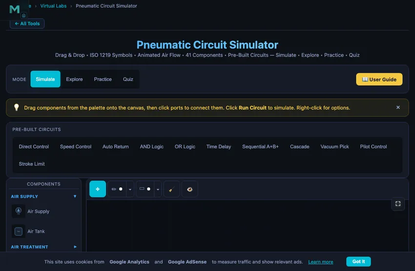

Pneumatic Circuit Simulator
Drag & Drop • ISO 1219 Symbols • Animated Air Flow • 52 Components • Pre-Built Circuits — Simulate • Explore • Practice • Quiz
📈 Displacement Diagram — each cylinder's stroke over time (A+ B+ A− B− sequence)
1 Overview
Welcome to the Pneumatic Circuit Simulator — a free, browser-based pneumatic systems simulator designed for mechanical engineering students, automation technicians, vocational instructors, and maintenance engineers. This tool serves as a powerful FluidSIM pneumatics online alternative, providing interactive ISO 1219 schematic building, real-time compressed air flow animation, and comprehensive learning modes — all without installation, signup, or licensing fees.
The simulator features 52 pneumatic components including FRL units, 5/2 valves, timer valves, logic gates, vacuum generators, and more. It includes 11 pre-built circuit templates and 4 interactive learning modes (Simulate, Explore, Practice, Quiz). Calculate cylinder force, air consumption, and study circuits ranging from basic direct control to multi-cylinder cascade sequencing.
2 Setting Up the Rig
Select components from the collapsible palette on the left. Click a component to place it on the canvas, or drag it directly. Click on port circles to create connections between components. Click the Run Circuit button to start the simulation and watch compressed air flow through your circuit with animated particles.
Load a pre-built circuit (Direct Control, Speed Control, Auto Return, AND/OR Logic, Time Delay, Sequential, Cascade, Vacuum Pick, Pilot Control, or Stroke Limit) to instantly study a working configuration. Or build from scratch using the 52 available ISO 1219 components.
3 Component Library — 52 ISO 1219 Components
Air Supply (2): Compressed air source and air reservoir tank. The tank is a working receiver: it charges from the line (watch the fill level and pressure label rise — larger volumes fill slower) and, if the compressor is deleted while running, it takes over as an amber-highlighted reserve supply until its stored air runs out. The compressor also has a finite flow capacity — drive two cylinders (or one large bore) at once and the demand exceeds it, so the supply pressure droops and the status warns “Compressor undersized”. This is the CFM-sizing lesson: pressure and flow can't both be unlimited.
Air Treatment / FRL (3): Filter, pressure regulator, and combined FRL unit for clean, regulated air.
Directional Control Valves (23): 2/2 on/off, 3/2 valves (push button, roller lever, idle return, plunger, solenoid), 5/2 valves (single/double solenoid, pilot), 5/3 valves (closed/exhaust centre), and 4/3 closed centre. ISO 5599 port numbering: 1(P), 2(A), 3(R), 4(B), 5(S).
Flow Control (3): One-way flow control (meter-out), throttle valve, quick exhaust valve.
Pressure Control (2): Relief valve, sequence valve. The relief valve clamps the line, it does not merely open a vent: set an 8 bar relief on a 10 bar supply and every gauge downstream reads 8 bar, because the surplus air is dumped to atmosphere. That is the core ISO 4414 over-pressure lesson, and the status bar reports “Relief valve open — line clamped at setting” while it is cracked.
Logic Valves (4): Check valve, pilot-operated check valve, shuttle valve (OR), dual-pressure valve (AND). The pilot check passes air 1 → 2 freely but blocks the return until pilot port 12 can unseat the cone. That is not a simple on/off test: a real unlockable non-return valve works on a pilot area ratio (selectable 3:1, 4:1 or 5:1), so it opens only when ppilot × ratio ≥ the blocked pressure plus any outlet back-pressure. Shuttle and AND valves use ISO 11727 port numbers — inputs 1 and 1(3), output 2.
Actuators (4): Single-acting cylinder, double-acting cylinder, rodless cylinder, rotary actuator. All three cylinders take a Load (N) setting and are solved with a real force balance: F = η (p1A1 − p2A2) with a mechanical efficiency η = 0.85 for seal and guide friction, netting the back-pressure on the opposite piston face. The readout shows that same net effective force — not the textbook p × A — plus a Load Ratio %. FESTO/SMC sizing practice keeps that ratio at 50–70 %; above 70 % the figure turns amber, above 100 % the cylinder stalls. The single-acting cylinder’s return spring is progressive and bore-dependent (about 12 % of the 6-bar force at rest rising to 20 % at full stroke), and it only returns if it can also lift the load. Cylinders also need an exhaust path: air on the opposite face must reach atmosphere or the cylinder simply cannot move — feed one through a closed 2/2 and the trapped air holds it, exactly as it would on the bench.
Vacuum (2): Venturi vacuum generator, suction cup. The vacuum depth is generated by the motive supply pressure, not a fixed setting: below ~1.5 bar the ejector makes no vacuum, and it rises to the rated maximum near 5 bar. Raise the supply and the vacuum deepens; the suction cup shows its live holding force (F = pvac × Acup) rise with it — the same formula used in Practice mode, so you can verify your hand calculation on the canvas. Below it the cup also prints the SF2 value: vacuum sizing applies a safety factor of 2 for a vertical lift and up to 4 for horizontal handling or porous parts, so never size a cup on the theoretical number.
Timing (2): On-delay and off-delay timer valves, modelled the way real ones are built — a 3/2 valve plus an air reservoir and a one-way throttle. They have four ports: 1 (supply), 2 (output), 3 (exhaust) and 12 (pilot). The pilot only times the switchover; the output is fed from the timer’s own supply, so remember to connect port 1 or the timer will never produce a signal.
Measurement (3): Pressure gauge, flow meter, proximity sensor.
Sensors (2): Limit switch NC and limit switch NO with roller lever actuation, triggered by cylinder piston position.
Utility (2): Silencer, T-connector.
4 Building & Simulating Circuits
Components are organised into collapsible categories in the palette. Drag or click to place on canvas. Click port circles to connect components with automatically routed orthogonal paths. Drag connection segments to adjust routing.
11 Pre-Built Templates: Direct Control, Speed Control, Auto Return, AND Logic (two-hand safety), OR Logic, Time Delay, Sequential A+B+, Cascade, Vacuum Pick, Pilot Control, and Stroke Limit.
Simulation: Animated blue particles show air flow direction and speed. Click 3/2 push buttons to toggle during simulation. Pressure gauges show live readings. Cylinders animate extension/retraction. The readout panel shows supply pressure, flow rate (NL/min, shown as scfm in imperial — compressed air is never measured in gal/min), air consumption per full cycle, net cylinder force, speed, and load ratio.
Cylinder speed — and the stopwatch test: compressor flow is quoted in normal litres (NL/min — free air at atmospheric pressure), but the air that fills the cylinder is compressed to line pressure, so the volumetric flow at the piston is QN ÷ (pgauge + 1) and the speed is v = Qactual ÷ A. Example: 200 NL/min at 6 bar into a 50 mm bore gives 200/7 = 28.6 L/min over 1963 mm² ≈ 242 mm/s. The on-screen stroke is driven by that same number rather than by a separate animation rate, so you can time the piston with a stopwatch and get the readout back: a 300 mm stroke at 100 mm/s takes 3 s. Meter-out flow controls and quick-exhaust valves scale the physical speed, so the number and the animation always slow down or speed up together.
Manipulation: Rotate (R), Duplicate (D or right-click), Delete (Delete), Undo (Ctrl+Z). Right-click for context menu.
Precise parameters: every slider in the properties panel is paired with a type-in number box — enter an exact value (e.g. a 63 mm bore) and press Enter; out-of-range values clamp to the component's limits automatically.
5 Explore, Practice & Quiz
Explore provides 16+ concepts across Fundamentals (Boyle's Law, flow, force), Components (valves, cylinders, FRL), Circuits (speed control, sequencing, cascade), and Applications (pick-and-place, clamping, sorting). Formulas, worked examples, and practical tips included.
Practice offers 12 randomised problems on cylinder force, piston speed, air consumption, flow rate, valve sizing, and pressure drop with step-by-step solutions.
Quiz tests with 5 randomly selected questions from a pool of 15 covering valve types, circuit design, calculations, and ISO standards.
6 Canvas Tools & Annotations
Annotation Toolbar: Use the marking toolbar above the canvas to annotate your circuit diagrams. Tools include Move (select, drag, resize annotations), Sketch (freehand drawing with pressure sensitivity, multiple colors and widths), and Shapes (rectangles, circles, ellipses, arrows, lines, double-arrows, and text labels).
Selection & Editing: Click any annotation to select it — a dashed selection box with corner handles appears. Drag inside the box to move, drag corners to resize, or use the action icons above the selection to rotate (15° increments), duplicate, or delete. Double-click a text label to edit it.
Zoom & Pan: Use the zoom toolbar (bottom-left) or keyboard shortcuts: Ctrl+= zoom in, Ctrl+- zoom out, Ctrl+0 reset view, Ctrl+1 fit all components. Zoom with Ctrl+Scroll (mouse) or pinch-to-zoom (touch). All elements — grid, components, connections, particles, and annotations — zoom together.
Pan Mode: Press H or right-click on empty canvas to toggle pan mode (yellow indicator on toolbar). Drag to pan the view. Press Escape to exit. Alternatively, hold Ctrl and drag to pan without entering pan mode.
Fullscreen: Click the ☶ button (top-right of canvas) for fullscreen mode with the component palette, toolbar, and readouts all visible.
Export & Toggle: Click 📷 to export the canvas as a PNG image with watermark. Use the 👁 eye icon to show/hide all annotations. Use the 🧹 Clear button to clear annotations by category (all, sketches only, or shapes & text only).
7 Keyboard Shortcuts & Tips
Circuit Shortcuts: Space = Run/Stop, Ctrl+Z = Undo, Ctrl+Shift+Z = Redo, R = Rotate, D = Duplicate, Delete/Backspace = Delete, Escape = Cancel.
Zoom/Pan Shortcuts: Ctrl+= = Zoom in, Ctrl+- = Zoom out, Ctrl+0 = Reset view, Ctrl+1 = Fit all components, H = Toggle pan mode, Escape = Exit pan mode.
- Always include an FRL unit between the air supply and the circuit.
- Use meter-out flow control (not meter-in) for smooth cylinder speed control — compressed air is compressible, so meter-in causes jerky motion.
- Add silencers to all exhaust ports to reduce noise in real installations.
- Use quick exhaust valves directly at cylinder ports for maximum retraction speed.
- In sequential circuits, use one-way roller levers (idle return) to avoid false signals.
- Set supply pressure to 6 bar for standard industrial pneumatic applications.
- ISO 5599 port numbering: 1=supply, 2=output A, 3=exhaust A, 4=output B, 5=exhaust B. Pilot ports follow the path they select: 12 opens 1→2 (extend), 14 opens 1→4 (retract).
- Pneumatics has no return line. Port 3 (and 5) vent to atmosphere through a silencer — there is no tank to return to, unlike hydraulics.
- Never hold a load on a closed-centre valve. ISO 4414 §5.4: air is compressible and every spool leaks, so use a pilot-operated check valve pair or a mechanical rod lock.
- Size the bore so the load ratio stays at 50–70 % of the available force, and remember the usable force is about 85 % of p × A once seal friction is counted.
- Hover over any button to see its keyboard shortcut in the tooltip.
Pneumatic Circuit Simulator — Build and Learn Compressed Air Systems Online

A pneumatic circuit uses compressed air (typically 4–10 bar) to power cylinders and actuators. Key components include an FRL unit for air preparation, directional control valves (3/2, 5/2, 5/3) to route airflow, flow control valves for speed regulation, and single-acting or double-acting cylinders. This free simulator lets you build ISO 1219 circuits with 52 components and simulate air flow in real time.
This free pneumatic circuit simulator lets you design, build, and simulate pneumatic circuits directly in your browser. Using ISO 1219 standard symbols, you can drag and drop 52 pneumatic components — from compressed air supplies and FRL units to 5/2 directional control valves, timer valves, vacuum generators, and logic gates — onto an interactive canvas and connect them to create working circuits. Watch compressed air flow through your circuit with animated particles, monitor real-time pressure and flow readings, and learn how pneumatic systems work through hands-on experimentation. This pneumatic trainer serves as a free FluidSIM pneumatics online alternative for students and technicians worldwide.
| Feature | Pneumatic | Hydraulic | Electro-Pneumatic |
|---|---|---|---|
| Working Medium | Compressed air | Hydraulic oil | Air + electrical signals |
| Operating Pressure | 4 – 10 bar | 50 – 350 bar | 4 – 10 bar |
| Speed | Fast (0.1 – 2 m/s) | Slow, precise | Fast, programmable |
| Force Output | Low – Medium | Very High | Low – Medium |
| Control Type | Pilot signals | Pilot / servo | Solenoid / PLC |
| Standard Valve | 5/2 DCV | 4/3 DCV | 5/2 solenoid |
| Exhaust | To atmosphere | Return to tank | To atmosphere |
| Environment | Clean, safe | Oil leak risk | Clean, flexible |
What Are the Main Components of a Pneumatic System?
Pneumatic systems use compressed air (typically at 4–8 bar) to transmit power and perform work. Unlike hydraulic systems that use incompressible oil, pneumatic circuits work with compressible air, which means actuator speed can be affected by load changes. The key components include an air compressor, FRL (Filter-Regulator-Lubricator) unit for air preparation, directional control valves (3/2, 5/2, 5/3) to route airflow, flow control valves for speed regulation, and actuators (cylinders, rotary actuators) that convert air pressure into motion. Understanding pneumatic circuit design is essential for automation, manufacturing, and industrial maintenance professionals.
What Are the Key Differences Between Pneumatic and Hydraulic Systems?
While both use fluid power, pneumatics operates at much lower pressures (4–10 bar vs 50–350 bar for hydraulics). Pneumatic circuits exhaust air to atmosphere through silencers, while hydraulic oil returns to a tank. Five-port valves (5/2, 5/3) are standard in pneumatics because each cylinder port needs its own exhaust path. Speed control uses meter-out (not meter-in) because compressed air is compressible — restricting inlet air causes jerky motion as pressure builds and releases. FRL units are mandatory in pneumatics to ensure clean, dry, lubricated air reaches the valves.
Sizing a Pneumatic Cylinder — A Workshop Clamp
Specify a single-acting pneumatic cylinder to clamp a workpiece with 800 N of force using 6 bar (typical shop air). What bore?
| Step | Working | Result |
|---|---|---|
| Apply force equation | F = p·A = p·(πD²/4) | — |
| Solve for D | D = √(4F/(pπ)) | — |
| Allow for ~85 % effective force (seal losses, return-spring) | Frequired = 800/0.85 | 941 N |
| Plug in | D = √(4×941/(600,000×π)) | D = 44.7 mm |
| Round to standard ISO bore | (ISO 6432 mini-cylinder sizes: 32, 40, 50 mm) | 50 mm bore |
| Actual clamp force at 50 mm bore, 6 bar | F = 6×105×π(0.025)² | 1178 N (1.5× margin) |
| Air consumption per 50 mm stroke | V = A·L = π(0.025)²×0.050 | 0.098 L per stroke at 6 bar (free air 0.69 L) |
That last number matters for compressor sizing. A clamp cycling once per second consumes 0.69 L/s of free air, or about 41 L/min. A small factory with twenty such clamps needs around 820 L/min of compressor capacity — a 15 kW compressor. Air consumption surprises designers who only look at the cylinder force.
Pneumatic vs Hydraulic vs Electric — The Decision Tree
Whether to power an actuator with air, oil, or an electric motor is the first decision in any automation project. The honest answer for each:
- Pneumatic: fast, simple, clean, weak. Cylinders down to 8 mm bore at 6 bar give 30 N. Stroke speeds up to 2 m/s. No fire risk, no oil contamination. Force limit around 5 kN for a 100 mm bore at 8 bar. Position control is harder because air is compressible.
- Hydraulic: powerful, precise, slow, dirty. Forces from kN to MN. Excellent position control because oil is incompressible. Slow because flow rates are lower. Maintenance demanding — oil leaks, seal wear, filtration. Standard for forming presses, vehicle suspensions, aircraft landing gear.
- Electric servo: precise, programmable, expensive. Forces match modest hydraulics (up to 50 kN). Excellent position control, programmable trajectories, regenerative energy recovery. Capital cost 3-5× pneumatic. Now dominating new industrial automation where flexibility matters more than absolute force.
Reading a Pneumatic Schematic, Bottom to Top
Same general approach as a hydraulic schematic, but with two twists: the working medium is air (exhausts to atmosphere instead of returning to tank), and the FRL unit is mandatory rather than optional. The walk:
- Start at the supply. The compressed-air supply symbol is a circle with an arrow. This goes immediately into the FRL set — Filter (water trap), Regulator (pressure-set), Lubricator (oil mist). Dirty, wet, unlubricated air destroys valves and cylinders.
- Find the main directional control valve. Usually a 5/2 or 5/3 (five ports, two or three positions). Different from hydraulic 4/3 because each cylinder port needs its own exhaust.
- Trace the cylinder lines. Cap end (extension) and rod end (retraction). Speed-control valves go on the EXHAUST lines, not the supply lines — this is meter-out control, the standard for pneumatics.
- Locate any signal valves. Limit switches, push buttons, time-delay valves — these pilot the main DCV based on system state. Modern installations replace many of these with electric sensors feeding a PLC.
- Spot the exhausts. Each exhaust port has a silencer (the conical/triangular symbol). Without silencers a pneumatic shop is unbearable.
References for Pneumatic System Design
- Festo Didactic — Pneumatic Trainer Manual. The standard hands-on reference; matches the symbols in this simulator one-to-one.
- ISO 1219-1:2012 — Graphical symbols for fluid power systems (shared with hydraulics).
- ISO 6432:2015 — Mini-cylinder bore-and-stroke standardisation.
- SMC Pneumatics Catalogue — the most-used commercial reference for valve and cylinder selection.
What Are the Standard Pneumatic Circuit Symbols (ISO 1219)?
| Component | ISO Symbol | Function |
|---|---|---|
| 3/2 Way Valve | 3 ports, 2 positions | Directs air to extend or retract single-acting cylinder |
| 5/2 Way Valve | 5 ports, 2 positions | Controls double-acting cylinder — extend & retract |
| 5/3 Way Valve | 5 ports, 3 positions | Double-acting cylinder with centre stop position |
| Single-Acting Cylinder | One air port + spring | Extends by air pressure, retracts by spring return |
| Double-Acting Cylinder | Two air ports | Extends and retracts by air pressure |
| Flow Control Valve | Adjustable orifice + check | Controls actuator speed in one direction |
| Pressure Relief Valve | Spring-loaded poppet | Limits maximum system pressure for safety |
| Shuttle Valve (OR) | Two inlets, one outlet | Passes air from either input — logic OR function |
| Two-Pressure Valve (AND) | Two inlets, one outlet | Passes air only when both inputs present — logic AND |
| FRL Unit | Filter + Regulator + Lubricator | Conditions compressed air before entering the circuit |
What Are Common Pneumatic System Operating Parameters?
| Parameter | Typical Range | Unit |
|---|---|---|
| Supply Pressure | 4 – 10 | bar |
| Standard Working Pressure | 6 | bar |
| Low-Pressure Pneumatics | 0.5 – 2 | bar |
| Cylinder Force (bore 32 mm @ 6 bar) | ≈ 483 | N |
| Cylinder Force (bore 63 mm @ 6 bar) | ≈ 1 870 | N |
| Air Consumption (32 mm bore, 100 mm stroke) | ≈ 0.048 | L per cycle |
What Is a 5/2 Directional Control Valve?
A 5/2 directional control valve has 5 ports and 2 switching positions. Port 1 receives compressed air from the supply. In position 1, air flows from port 1 to port 2 (extending the cylinder) while port 4 exhausts through port 5. In position 2, air flows from port 1 to port 4 (retracting) while port 2 exhausts through port 3. It is the standard valve for controlling double-acting cylinders in pneumatic circuits.
What Is an FRL Unit in Pneumatics?
An FRL unit (Filter-Regulator-Lubricator) is an air preparation assembly placed between the compressor and the pneumatic circuit. The filter removes moisture, dust, and oil contaminants. The regulator reduces and stabilises supply pressure to the required working pressure (typically 6 bar). The lubricator adds a fine oil mist to lubricate valve spools and cylinder seals. The FRL is always placed at the air inlet of every pneumatic circuit.
What Is the Difference Between Single-Acting and Double-Acting Cylinders?
A single-acting cylinder uses air pressure for one stroke direction (usually extension) and a spring for the return stroke. It needs only one air port and a 3/2 valve. A double-acting cylinder uses air pressure for both extension and retraction, requiring two air ports and a 5/2 valve. Double-acting cylinders provide force in both directions and are used in most industrial applications.
What Is the Cascade Method in Pneumatics?
The cascade method is a systematic technique for designing multi-actuator pneumatic circuits that avoids signal conflicts. A signal conflict occurs when two opposing pilot signals reach a valve simultaneously. The cascade method divides the sequence into groups, using cascade valves to switch air supply between groups so that only one pilot signal is active at a time. It is the standard method taught in engineering education programs for circuits with 3 or more actuators.
What Is an Electro-Pneumatic Circuit?
An electro-pneumatic circuit combines electrical control with pneumatic actuation. Instead of pneumatic pilot signals, solenoid valves are switched by electrical signals from pushbuttons, sensors, relays, or PLCs. The pneumatic power circuit remains the same (cylinders, flow controls), but the control circuit uses electrical wiring, limit switches, and relay logic. Electro-pneumatic systems offer faster switching, easier sequence programming, and remote control capability. Try our Electro-Pneumatic Circuit Simulator to build these circuits.
Explore Related Simulators
If you found this pneumatic circuit simulator helpful, explore our Electro-Pneumatic Circuit Simulator, Hydraulic Circuit Simulator, Boyle's Law Simulator, and Stress-Strain Simulator for more hands-on practice.